Released: December 8, 2005
|
Welcome to Toronto, the third stop of the NetBeans worldTour!
On December 5th, the NetBeans team met in one of Canada's most modern meeting places,
the Metro Toronto Convention center, right next to the CN-tower and the Sky Dome.
|
|
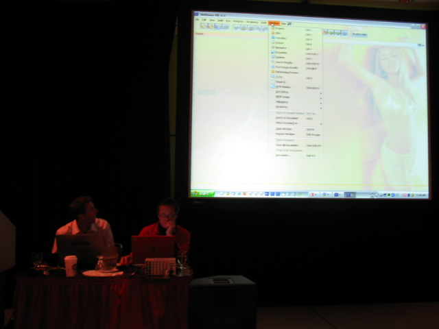
After Brian Leonard and Sang Shin prepared the stage,
they killed time by experimenting with Kirill's Beyonce-style
Substance Look and Feel.
With a different background image and a darker color theme,
a cool-looking Gothic NetBeans was assembled in minutes.
At the end of his last talk, Brian used his gothic-themed IDE
as an example for yet another workspace improvement, much to the amusement of the attendees.
|
|
An hour before the first demo, Sang and Brian took a peek out of the conference room. Over a hundred curious developers had gathered in the hall chatting, with more arriving every minute! Soon we ran out of free food, so of course we went out to buy more lunches before the presentations started.
|
|
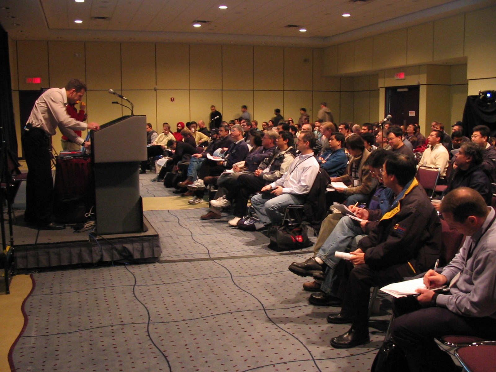
It was a full house in the NetBeans day conference room at the Metro Toronto Convention Center: More than 250 attendees took the opportunity to see the NetBeans IDE in action. Many of them have been coding in text editors for their whole lives and said they wanted to see first-hand what an IDE could do to improve their productivity. Others were interested in the NetBeans community because they had heard how responsive the latest versions of the IDE were despite the simultaneously growing number of features.
|
|
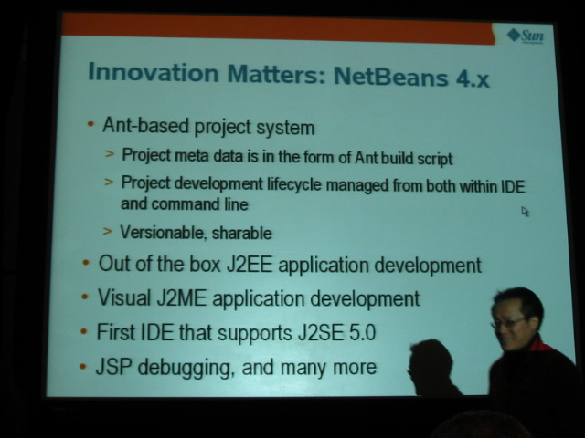
After lunch, Sang Shin took over the stage and started the session with
"What makes NetBeans IDE the best".
Within half an hour the highly interested crowd was treated to a concise overview
of version 4.1 and an in-depth look at 5.0 features, such as Matisse and Profiler.
After the live demonstration it was quite clear that Developer Collaboration
is not "a fancy word for CVS" as one attendee mistakingly assumed,
but actually a full-featured instant messager tailor-made for live cooperative coding.
|
|
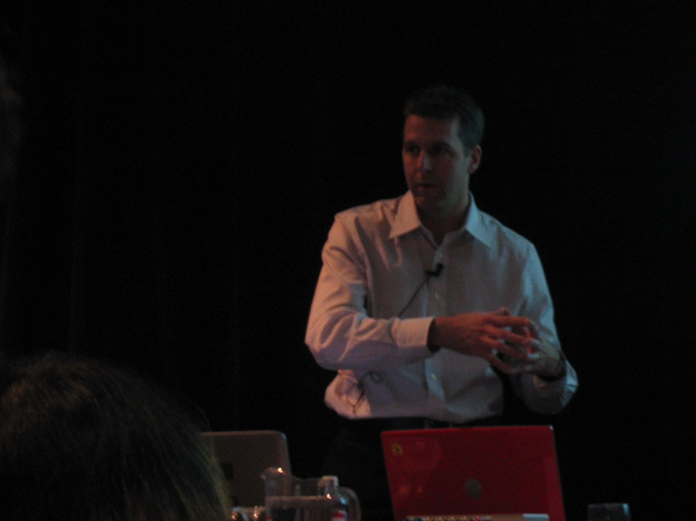
As you probably all would agree, the key purpose for
using an IDE is facilitating the developers' workflow
during the creation of new applications. So Brian Leonard, whose
"Plugin Development and Rich Client Platform" presentation was next,
demonstrated how the NetBeans platform
can take you further by providing a generic application with a GUI and with the most common components
already up and working. Basically, you just
add your business logic and ship it. The API seems quite tough, but
there are many tutorials available
to navigate you through.
|
|
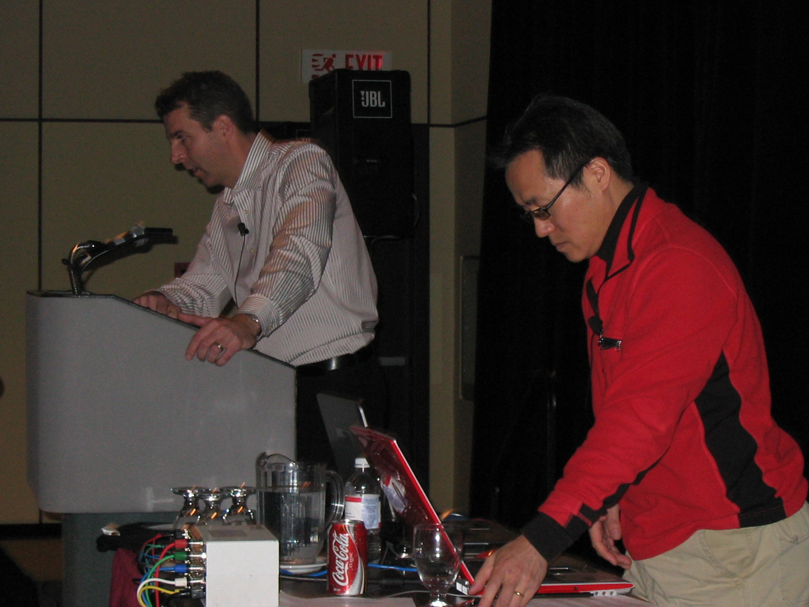
Between talks, Brian and Sang answered lots of questions from the audience:
People who wanted to get started with the new features right away were
pointed to the relevant Docs & Support pages
with quickstart guides, hands-on labs and sample code
free to use in your own projects. New tutorials are added to the pages constantly.
|
|
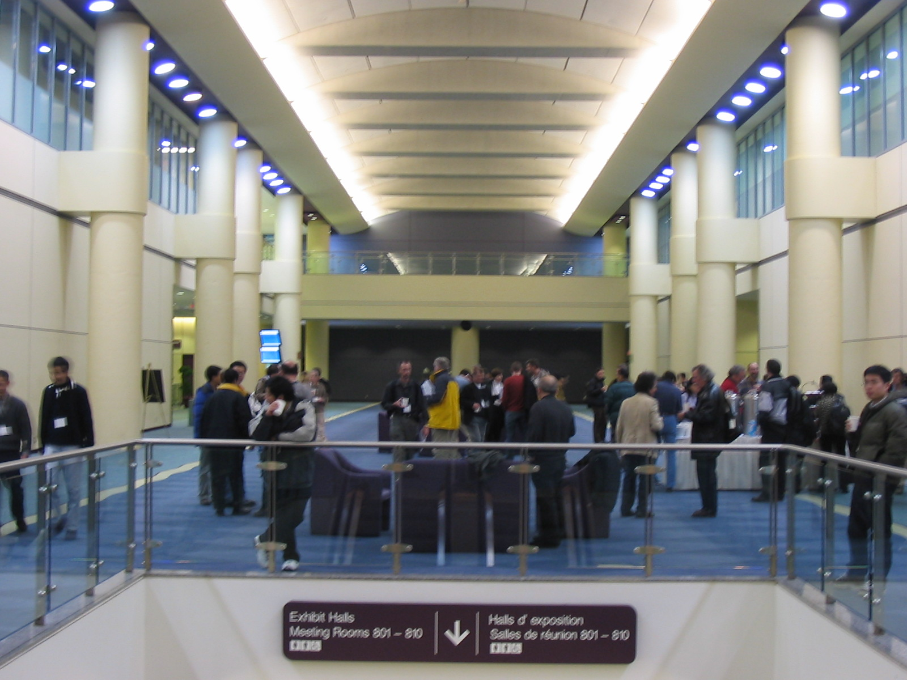
During the break people gathered in the Metro Toronto Conference center's hall for a cup of coffee
and exchange of experiences. Especially the people who never used an IDE before said they
were impressed with the ease of creating platform-independent Swing GUIs with Matisse,
which as we all know has until recently been a rather pain-in-the-neck aspect
of creating a new application.
|
|
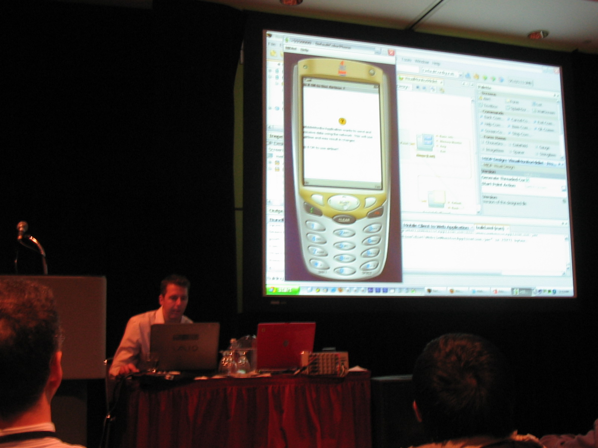
Some attendees had come especially for the "What Makes NetBeans the Best for J2ME Development"
demo presented after the break.
When Brian demonstrated the Mobility features in NetBeans IDE,
he even threw his sacred Sony-Ericson into the crowd so everyone could see
with his own eyes that he was debugging a mobile application
while it was running live on the cell phone.
|
|
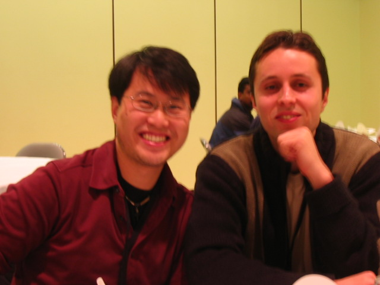
Among the ones interested in J2ME were Wayne Pau and Suavek Zajac
from the Canadian iAnywhere/Sybase, who have been
into RIM wireless application development for a while.
They are familiar with an older version of NetBeans IDE and were curious
about the new Mobility features that have been announced recently.
They liked what they saw in Brian's Mobility demo and now want to use NetBeans IDE 5.0 at work.
|
|
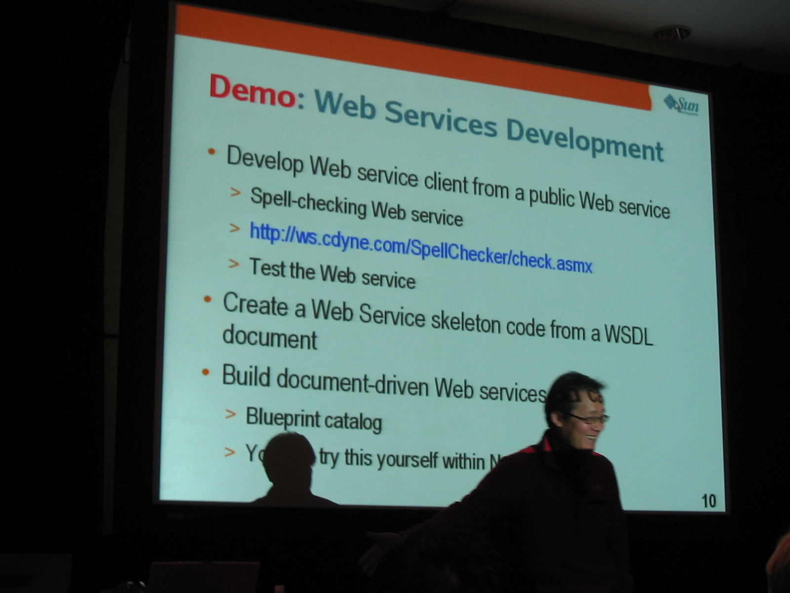
A quick survey showed there were quite a lot J2EE developers in the audience
so Sang pulled out all the stops in his
"What Makes NetBeans the Best for J2EE Development" demo.
He showed how a well-integrated CVS and Profiler can simplify the development process
for larger enterprise applications.
He also demonstrated the Editor support for Struts and JSF, Javadoc, Web Services,
various application servers, and so many other features that eventually, he even ran out of time.
In case you want to go through the J2EE demos yourself, there are several
web application quickstart guides
available in the NetBeans online knowledgebase.
|
|
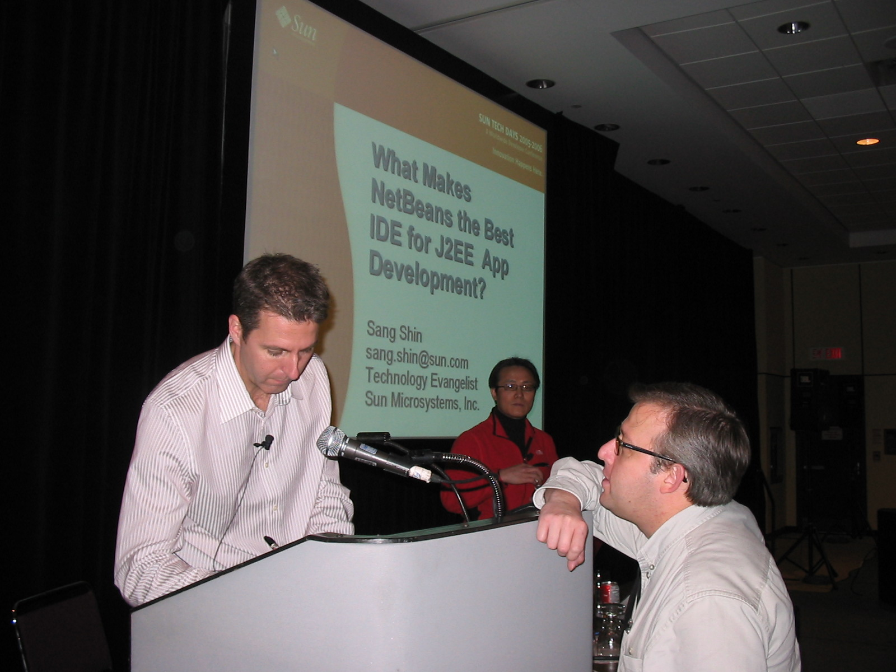
There are situations where a presenter does not mention a step explicitly,
so don't be afraid to ask and he will tell you all the details.
After the last talk, Brian and Sang answered such questions from the audience like,
"But how do I get this mobile app on my phone?"
The easiest way is using Bluetooth supporting hardware: Deploy the mobile app
from the IDE and it will be transmitted to your cell phone via air.
|
|
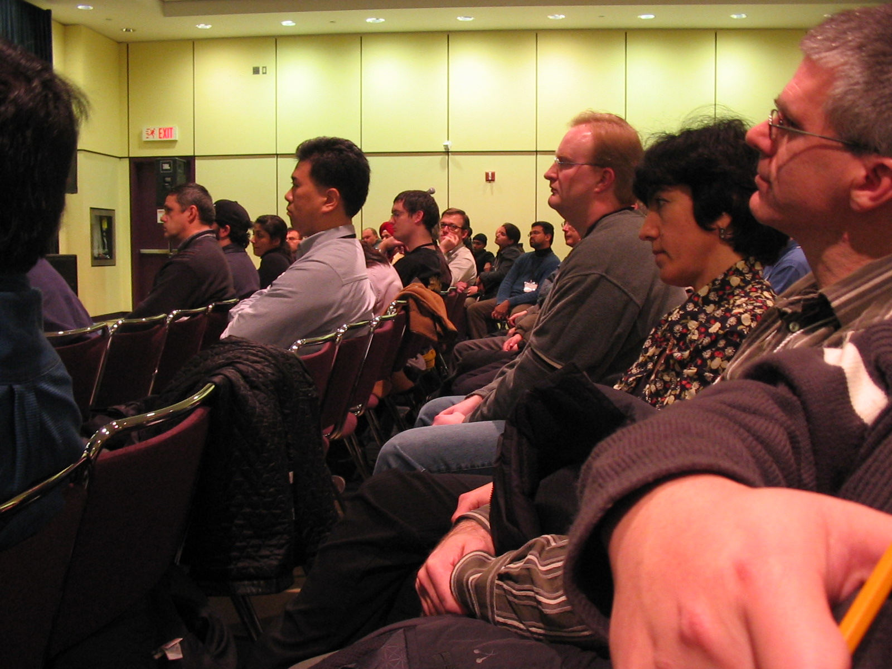
During the last talk, a late-comer sauntered in and took a seat to listen to Sang and Brian.
The guy next to him casually looked over for a second, and looked back at the screen.
Then he jerked his head around and looked again: Wasn't that... James Gosling?
Yes, Gosling himself came as promised to hold the closing keynote
and answer Java related questions from the audience.
|
|
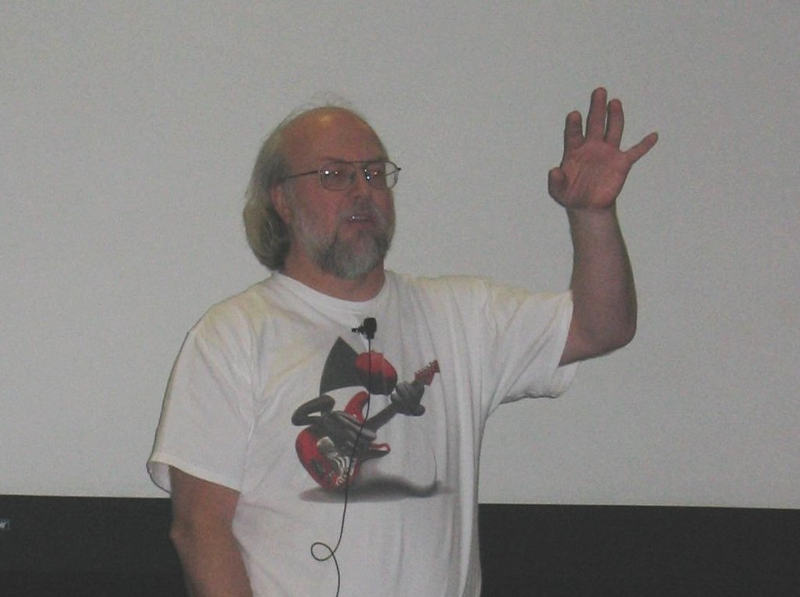
Gosling entered the stage, and without further ado ripped open a plastic bag and
hurled out t-shirts into the crowd! He didn't even need a slingshot this time,
practice makes perfect and he easily reached all the corners of the room so everybody got a chance to
grab one. The t-shirts were much appreciated among the Java developers,
since they turned out to be special Duke shirts — complete with a Gosling autograph.
|
|
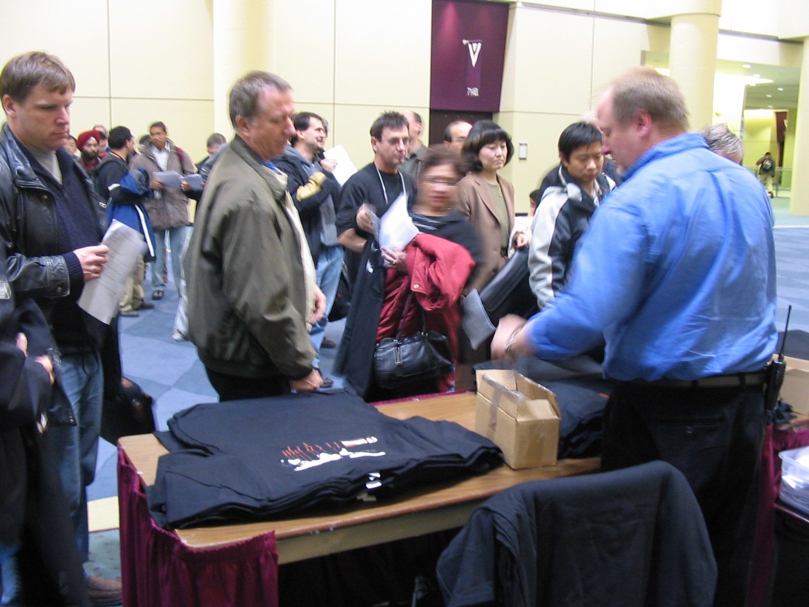
After the closing keynote,
a stampede broke loose as people collected their free NetBeans worldTour shirts and NetBeans CD-ROMs.
|
|
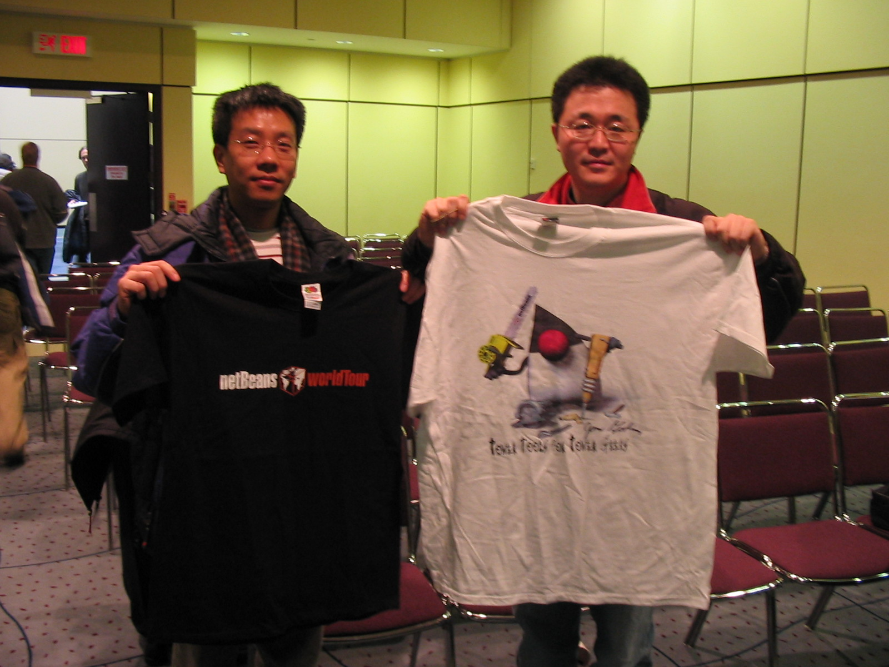
Good catch: Two new proud owners of a NetBeans worldTour t-shirt and autographed Duke shirt!
If you don't have your worldTour t-shirt yet, come join us at the
next worldTour stop in Bangkok!
|